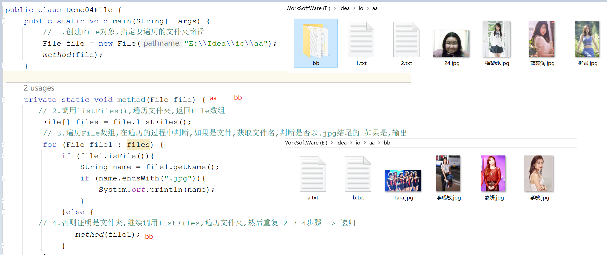
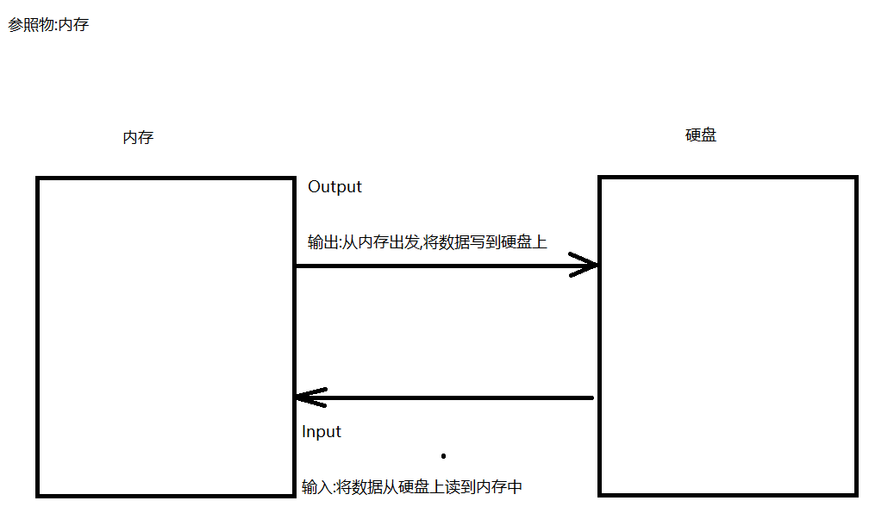
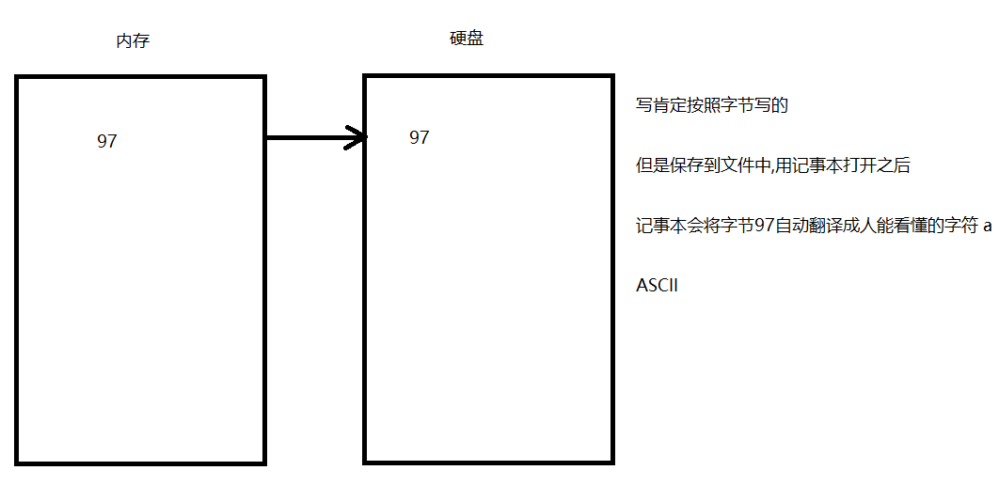
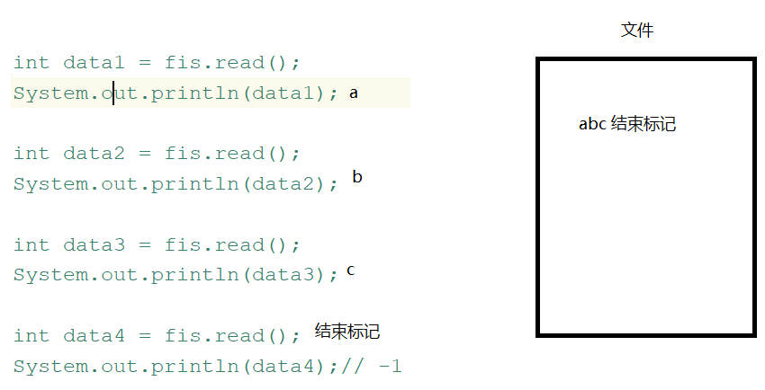
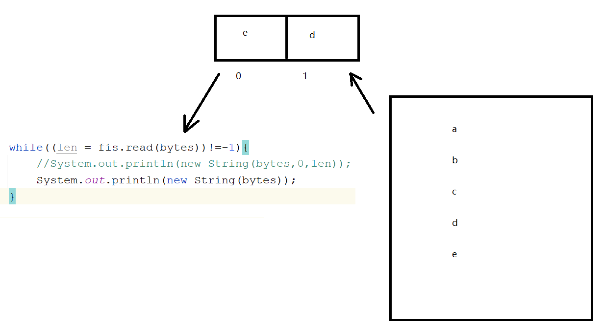
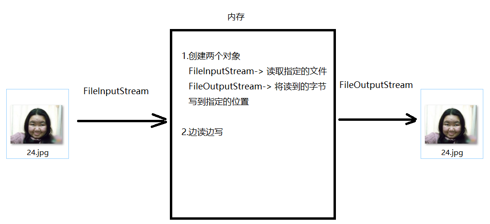

来源：用户提供的 笔记(1).zip / 03_笔记/模块21_IO流/模块21.IO流.md。保留原课程内容，历史环境、示例错误和故意报错的教学代码应结合上下文阅读。
模块21.IO流
java
模块20回顾:
1.HashMap
a.特点:无序,无索引,key唯一,线程不安全,可以存null键null值
b.数据结构:哈希表
c.方法:put remove get keySet entrySet values containsKey
2.LinkedHashMap:
a.特点:有序,无索引,key唯一,线程不安全,可以存null键null值
b.数据结构:哈希表+双向链表
3.key如何去重复:重写hashCode和equals方法
4.TreeSet:是set接口实现类
a.特点:对元素排序,无索引,元素唯一,线程不安全,不可以存null键null值
b.构造:
TreeSet()
TreeSet(Comparator c)
5.TreeMap:
a.特点:对 key排序,无索引,key唯一,线程不安全,不可以存null键null值
b.构造:
TreeMap()
TreeMap(Comparator c)
6.Hashtable:是map接口的实现类
a.特点:无序,无索引,key唯一,线程安全,不能存null键null值
b.用法:和HashMap一样
c.数据结构:哈希表
7.Vector:
a.特点:有序,有索引,元素可重复,线程安全
b.数据结构:数组
8.Properties:是Hashtable子类
a.特点:无序,无索引,key唯一,线程安全,不能存null键null值,key和value都是String的
b.特有方法:
setProperty
getProperty
stringPropertyNames
load(IO流对象) -> 将流中数据加载到集合中
模块21重点:
1.分清楚IO流流向
2.会字节流和字符流的读写操作
第一章.File类
1.File类
java
计算机常识:
1.以.jpg结尾的一定是图片吗?
不一定,有可能是文件夹
2.什么是文本文档?
用记事本打开,人能看懂的文件 -> txt html css
3.E:\Idea\io\1.jpg 中的1.jpg的父路径是谁?
E:\Idea\io
4.分隔符:
a.路径名称分隔符:
windows: \
linux: /
b.路径分隔符:一个路径和其他路径之间的分隔符
;
java
1.概述:文件和目录(文件夹)路径名的抽象表示
2.简单理解:
我们在创建File对象的时候,需要传递一个路径,这个路径定为到哪个文件或者文件夹上,我们的File就代表哪个对象
File file = new File("E:\Idea\io\1.jpg")
2.File的静态成员
java
static String pathSeparator:与系统有关的路径分隔符，为了方便，它被表示为一个字符串。
static String separator:与系统有关的默认名称分隔符，为了方便，它被表示为一个字符串。
java
public class Demo01File {
public static void main(String[] args) {
//file01();
file02();
}
/*
将来写代码如何正确编写一个路径用java代码
*/
private static void file02() {
String path1 = "E:\\Idea\\io";
System.out.println(path1);
System.out.println("==================");
//要求代码写完,一次编写,到处运行
String path2 = "E:"+File.separator+"Idea"+File.separator+"io";
System.out.println(path2);
}
private static void file01() {
//static String pathSeparator:与系统有关的路径分隔符，为了方便，它被表示为一个字符串。
String pathSeparator = File.pathSeparator;
System.out.println("pathSeparator = " + pathSeparator); // ;
//static String separator:与系统有关的默认名称分隔符，为了方便，它被表示为一个字符串。
String separator = File.separator;
System.out.println("separator = " + separator); // \
}
}
3.File的构造方法
java
File(String parent, String child) 根据所填写的路径创建File对象
parent:父路径
child:子路径
File(File parent, String child) 根据所填写的路径创建File对象
parent:父路径,是一个File对象
child:子路径
File(String pathname) 根据所填写的路径创建File对象
pathname:直接指定路径
java
public class Demo02File {
public static void main(String[] args) {
//File(String parent, String child) 根据所填写的路径创建File对象
//parent:父路径
//child:子路径
File file1 = new File("E:\\Idea\\io", "1.jpg");
System.out.println("file1 = " + file1);
//File(File parent, String child) 根据所填写的路径创建File对象
//parent:父路径,是一个File对象
//child:子路径
File parent = new File("E:\\Idea\\io");
File file2 = new File(parent, "1.jpg");
System.out.println("file2 = " + file2);
//File(String pathname) 根据所填写的路径创建File对象
//pathname:直接指定路径
File file3 = new File("E:\\Idea\\io\\1.jpg");
System.out.println("file3 = " + file3);
}
}
细节:
我们创建File对象的时候,传递的路径可以是不存在的,但是传递不存在的路径
4.File的获取方法
java
String getAbsolutePath() -> 获取File的绝对路径->带盘符的路径
String getPath() ->获取的是封装路径->new File对象的时候写的啥路径,获取的就是啥路径
String getName() -> 获取的是文件或者文件夹名称
long length() -> 获取的是文件的长度 -> 文件的字节数
java
private static void file01() {
//String getAbsolutePath() -> 获取File的绝对路径->带盘符的路径
File file1 = new File("1.txt");
System.out.println("file1.getAbsolutePath() = " + file1.getAbsolutePath());
//String getPath() ->获取的是封装路径->new File对象的时候写的啥路径,获取的就是啥路径
File file2 = new File("io\\1.txt");
System.out.println("file2.getPath() = " + file2.getPath());
//String getName() -> 获取的是文件或者文件夹名称
File file3 = new File("E:\\Idea\\io\\1.jpg");
System.out.println("file3.getName() = " + file3.getName());
//long length() -> 获取的是文件的长度 -> 文件的字节数
File file4 = new File("E:\\Idea\\io\\1.txt");
System.out.println("file4.length() = " + file4.length());
}
5.File的创建方法
java
boolean createNewFile() -> 创建文件
如果要创建的文件之前有,创建失败,返回false
如果要创建的文件之前没有,创建成功,返回true
boolean mkdirs() -> 创建文件夹(目录)既可以创建多级文件夹,还可以创建单级文件夹
如果要创建的文件夹之前有,创建失败,返回false
如果要创建的文件夹之前没有,创建成功,返回true
java
private static void file02() throws IOException {
/*boolean createNewFile() -> 创建文件
如果要创建的文件之前有,创建失败,返回false
如果要创建的文件之前没有,创建成功,返回true*/
File file1 = new File("E:\\Idea\\io\\1.txt");
System.out.println("file1.createNewFile() = " + file1.createNewFile());
/*boolean mkdirs() -> 创建文件夹(目录)既可以创建多级文件夹,还可以创建单级文件夹
如果要创建的文件夹之前有,创建失败,返回false
如果要创建的文件夹之前没有,创建成功,返回true*/
File file2 = new File("E:\\Idea\\io\\haha\\heihei\\hehe");
System.out.println("file2.mkdirs() = " + file2.mkdirs());
}
6.File类的删除方法
java
boolean delete()->删除文件或者文件夹
注意:
1.如果删除文件,不走回收站
2.如果删除文件夹,必须是空文件夹,而且也不走回收站
java
private static void file03() {
//boolean delete()->删除文件或者文件夹
//File file1 = new File("E:\\Idea\\io\\1.txt");
File file1 = new File("E:\\Idea\\io\\haha");
System.out.println("file1.delete() = " + file1.delete());
}
7.File类的判断方法
java
boolean isDirectory() -> 判断是否为文件夹
boolean isFile() -> 判断是否为文件
boolean exists() -> 判断文件或者文件夹是否存在
java
private static void file04() {
File file = new File("E:\\Idea\\io\\1.txt");
// boolean isDirectory() -> 判断是否为文件夹
System.out.println("file.isDirectory() = " + file.isDirectory());
// boolean isFile() -> 判断是否为文件
System.out.println("file.isFile() = " + file.isFile());
// boolean exists() -> 判断文件或者文件夹是否存在
System.out.println("file.exists() = " + file.exists());
}
8.File的遍历方法
java
String[] list() -> 遍历指定的文件夹,返回的是String数组
File[] listFiles()-> 遍历指定的文件夹,返回的是File数组 ->这个推荐使用
细节:listFiles方法底层还是list方法
调用list方法,遍历文件夹,返回一个Stirng数组,遍历数组,将数组中的内容一个一个封装到File对象中,然后再将File对象放到File数组中
java
private static void file05() {
File file = new File("E:\\Idea\\io\\aa");
//String[] list() -> 遍历指定的文件夹,返回的是String数组
String[] list = file.list();
for (String s : list) {
System.out.println(s);
}
//File[] listFiles()-> 遍历指定的文件夹,返回的是File数组 ->这个推荐使用
System.out.println("==============");
File[] files = file.listFiles();
for (File file1 : files) {
System.out.println(file1);
}
}
练习:遍历指定文件夹下所有的.jpg文件
java
1.创建File对象,指定要遍历的文件夹路径
2.调用listFiles(),遍历文件夹,返回File数组
3.遍历File数组,在遍历的过程中判断,如果是文件,获取文件名,判断是否以.jpg结尾的
如果是,输出
4.否则证明是文件夹,继续调用listFiles,遍历文件夹,然后重复 2 3 4步骤 -> 递归
java
public class Demo04File {
public static void main(String[] args) {
// 1.创建File对象,指定要遍历的文件夹路径
File file = new File("E:\\Idea\\io\\aa");
method(file);
}
private static void method(File file) {
// 2.调用listFiles(),遍历文件夹,返回File数组
File[] files = file.listFiles();
// 3.遍历File数组,在遍历的过程中判断,如果是文件,获取文件名,判断是否以.jpg结尾的 如果是,输出
for (File file1 : files) {
if (file1.isFile()){
String name = file1.getName();
if (name.endsWith(".jpg")){
System.out.println(name);
}
}else {
// 4.否则证明是文件夹,继续调用listFiles,遍历文件夹,然后重复 2 3 4步骤 -> 递归
method(file1);
}
}
}
}

9.相对路径和绝对路径
java
1.绝对路径:从盘符开始写的路径
E:\\idea\\io\\1.txt
2.相对路径:不从盘符名开始写的路径
3.针对idea中写相对路径:
a.口诀:哪个路径是参照路径,哪个路径就可以省略不写,剩下的就是在idea中的相对路径写法
在idea中参照路径其实就是当前project的绝对路径
b.比如:在module21下创建了一个1.txt
先找1.txt的绝对路径:E:\Idea\idea2022\workspace\javase\module21\1.txt
再找参照路径:E:\Idea\idea2022\workspace\javase
参照路径可以省略:module21\1.txt
4.总结:
在idea中写的相对路径,其实就是从模块名开始写
5.注意:
如果直接写一个文件名1.txt,它所在的位置默认是在当前project下
第二章.字节流
1.IO流介绍以及输入输出以及流向的介绍
java
1.单词:
Output:输出
Input:输入
write:写数据
read:读数据
2.IO流:
将一个设备上的数据传输到另外一个设备上,称之为IO流技术
3.为啥要学IO流呢?
之前学了一个集合以及数组,可以保存数据,但是这两个都是临时存储(代码运行完毕,集合和数组会从内存中消失,从而数据就不存在了),所以集合和数组达不到永久保存的目的,我们希望咱们的数据永久保存起来,所以我们就可以将数据保存到硬盘上,此时我们就可以随时想拿到硬盘上的数据就随时拿
而且我们将来传输数据,必然要用到输入,输出动作
2.IO流的流向_针对se阶段的IO
java
输入流:将数据从硬盘上读到内存中 Input
输出流:从内存出发,将数据写到硬盘上 Output
要是从电脑和电脑之间做数据传输,就是相对的
发数据一方 : 输出
接数据一方 : 输入

3.IO流分类
java
字节流:万能流,一切皆字节
字节输出流: OutputStream 抽象类
字节输入流: InputStream 抽象类
字符流:专门操作文本文档
字符输出流:Writer 抽象类
字符输入流:Reader 抽象类
4.OutputStream中子类[FileOutputStream]的介绍以及方法的简单介绍
java
1.概述:字节输出流,OutputStream 是一个抽象类
子类: FileOutputStream
2.作用:往硬盘上写数据
3.构造:
FileOutputStream(File file)
FileOutputStream(String name)
4.特点:
a.指定的文件如果没有,输出流会自动创建
b.每执行一次,默认都会创建一个新的文件,覆盖老文件
5.方法:
void write(int b) 一次写一个字节
void write(byte[] b) 一次写一个字节数组
void write(byte[] b, int off, int len) 一次写一个字节数组一部分
b:写的数组
off:从数组的哪个索引开始写
len:写多少个
void close() -> 关闭资源
java
/*
void write(int b) 一次写一个字节
*/
private static void method01() throws IOException {
FileOutputStream fos = new FileOutputStream("module21\\1.txt");
fos.write(97);
fos.close();
}
java
/*
void write(byte[] b) 一次写一个字节数组
*/
private static void method02()throws IOException {
FileOutputStream fos = new FileOutputStream("module21\\1.txt");
byte[] bytes = {97,98,99,100,101,102,103};
fos.write(bytes);
fos.close();
}
java
/*
void write(byte[] b, int off, int len) 一次写一个字节数组一部分
b:写的数组
off:从数组的哪个索引开始写
len:写多少个
*/
private static void method03()throws IOException {
FileOutputStream fos = new FileOutputStream("module21\\1.txt");
byte[] bytes = {97,98,99,100,101,102,103};
fos.write(bytes,0,2);
fos.close();
}
java
/*
void write(byte[] b) 一次写一个字节数组
*/
private static void method04()throws IOException {
FileOutputStream fos = new FileOutputStream("module21\\1.txt");
//byte[] bytes = "abc".getBytes();
fos.write("abcde".getBytes());
fos.close();
}

java
1.字节流的续写追加:
FileOutputStream(String name, boolean append)
append:true -> 会实现续写追加,文件不覆盖了
2.换行:
a.windows: \r\n -> 占2个字节 \n
b.linux: \n
c.mac os : \r
java
private static void method05()throws IOException {
FileOutputStream fos = new FileOutputStream("module21\\1.txt",true);
fos.write("床前明月光\r\n".getBytes());
fos.write("疑是地上霜\n".getBytes());
fos.write("举头望明月\n".getBytes());
fos.write("低头思故乡\n".getBytes());
fos.close();
}
5.InputStream子类[FileInputStream]的介绍以及方法的使用
java
1.概述:字节输入流 InputStream ,是一个抽象类
子类:FileInputStream
2.作用:读数据,将数据从硬盘上读到内存中来
3.构造:
FileInputStream(File file)
FileInputStream(String path)
4.方法:
int read() 一次读一个字节,返回的是读取的字节
int read(byte[] b) 一次读取一个字节数组,返回的是读取的字节个数
int read(byte[] b, int off, int len) 一次读取一个字节数组一部分,返回的是读取的字节个数
void close() 关闭资源
6.一次读取一个字节
java
/*
int read() 一次读一个字节,返回的是读取的字节
*/
private static void method01()throws Exception {
FileInputStream fis = new FileInputStream("module21\\1.txt");
//int data1 = fis.read();
//System.out.println(data1);
//int data2 = fis.read();
//System.out.println(data2);
//int data3 = fis.read();
//System.out.println(data3);
//int data4 = fis.read();
//System.out.println(data4);// -1
//int data5 = fis.read();
//System.out.println(data5);//-1
System.out.println("=================");
//定义一个变量,接收读取到的字节
int len;
while((len = fis.read())!=-1){
System.out.println((char)len);
}
fis.close();
}
问题1:一个流对象,读完之后,就不要再读了;除非重新new一个新的对象
问题2:流关闭之后,流对象不能继续使用了
javaException in thread "main" java.io.IOException: Stream Closed at java.base/java.io.FileInputStream.read0(Native Method) at java.base/java.io.FileInputStream.read(FileInputStream.java:228) at com.atguigu.c_input.Demo01FileInputStream.method01(Demo01FileInputStream.java:38) at com.atguigu.c_input.Demo01FileInputStream.main(Demo01FileInputStream.java:7)
7.读取-1的问题
java
每个文件末尾都会有一个"结束标记",这个"结束标记"我们看不见,摸不着
而read()方法规定,如果读到了文件的结束标记,方法直接返回-1

8.一次读取一个字节数组以及过程
java
/*
int read(byte[] b) 一次读取一个字节数组,返回的是读取的字节个数
*/
private static void method02()throws Exception {
FileInputStream fis = new FileInputStream("module21\\1.txt");
/*
创建一个数组:byte[]
1.创建的数组相当于一个临时存储区域,我们要读取的内容会临时保存到数组中
然后我们再从数组中将数据获取
2.数组长度定为多少,每次读取多少个,一般情况下数组长度定为1024或者1024的倍数
如果剩下的字节不够数组长度了,那么就最后有多少读多少
*/
byte[] bytes = new byte[2];
//int len1 = fis.read(bytes);
/*System.out.println(len1);//2
System.out.println(new String(bytes,0,len1));
System.out.println("===============");
int len2 = fis.read(bytes);
System.out.println(len2);//2
System.out.println(new String(bytes,0,len2));
System.out.println("===============");
int len3 = fis.read(bytes);
System.out.println(len3);//1
System.out.println(new String(bytes,0,len3));*/
//定义一个变量len,接收读取的字节个数
int len;
while((len = fis.read(bytes))!=-1){
//System.out.println(new String(bytes,0,len));
System.out.println(new String(bytes));
}
fis.close();
}

9.字节流实现图片复制分析

10.字节流实现图片复制代码实现
java
public class Demo01CopyFile {
public static void main(String[] args)throws Exception {
//1.创建FileInputStream
FileInputStream fis = new FileInputStream("E:\\Idea\\io\\24.jpg");
//2.创建一个FileOutputStream,将读取的图片写到指定的位置
FileOutputStream fos = new FileOutputStream("E:\\Idea\\io\\大姐.jpg");
//3.定义一个数组
byte[] bytes = new byte[1024];
//4.边读边写
int len;
while((len = fis.read(bytes))!=-1){
fos.write(bytes,0,len);//读多少个,写多少个
}
//5.关流 先开后关
fos.close();
fis.close();
}
}
第三章.字符流
1.字节流读取中文的问题
java
1.注意:
字节流是万能流,更侧重于文件复制,但是尽量不要边读边看
2.原因:
UTF-8:一个汉字占3个字节
GBK:一个中文占2个字节
如果按照字节读取,每次读取的字节没有构成一个汉字的字节数,就直接输出,汉字是显示不了的
3.解决:
将文本文档中的内容,按照字符去操作
话说回来:
1.按照字符去操作编码也要一致,如果不一致,照样会乱码
2.按照字节流去操作即使编码一致,边读边看,也有可能乱码
2.FileReader的介绍以及使用
java
字符流专门操作文本文档的,但是复制操作不要用字符流,要用字节流
java
1.概述:字符输入流 -> Reader -> 是一个抽象类
子类:FileReader
2.作用:将文本文档中的内容读取到内存中来
3.构造:
FileReader(File file)
FileReader(String path)
4.方法:
int read() -> 一次读取一个字符,返回的是读取字符对应的int值
int read(char[] cbuf) -> 一次读取一个字符数组,返回的是读取个数
int read(char[] cbuf, int off, int len) -> 一次读取一个字符数组一部分,返回的是读取个数
cbuf:读取的数组
off:从数组的哪个索引开始读
len:读多少个
void close() -> 关闭资源
java
private static void method01() throws IOException {
FileReader fr = new FileReader("module21\\1.txt");
int len;
while((len = fr.read())!=-1){
System.out.println((char) len);
}
fr.close();
}
java
private static void method02()throws Exception {
FileReader fr = new FileReader("module21\\1.txt");
char[] chars = new char[2];
int len;
while((len = fr.read(chars))!=-1){
System.out.println(new String(chars,0,len));
}
fr.close();
}
3.FileWriter的介绍以及使用
java
1.概述:字符输出流 -> Writer -> 抽象类
子类:FileWriter
2.作用:将数据写到文件中
3.构造:
FileWriter(File file)
FileWriter(String fileName)
FileWriter(String fileName, boolean append) -> 追加,续写
4.方法:
void write(int c) -> 一次写一个字符
void write(char[] cbuf) 一次写一个字符数组
void write(char[] cbuf, int off, int len) 一次写一个字符数组一部分
void write(String str) 直接写一个字符串
void flush() :将缓冲区中的数据刷到文件中
void close() 关流
5.注意:FileWriterr底层自带一个缓冲区,我们写的数据会先保存到缓冲区中,所以我们需要将缓冲区中的数据刷到文件中
java
public class Demo01FileWriter {
public static void main(String[] args)throws Exception {
FileWriter fw = new FileWriter("module21\\2.txt");
fw.write("千山鸟飞绝\r\n");
fw.write("万径人踪灭\r\n");
fw.write("孤舟蓑笠翁\r\n");
fw.write("独钓寒江雪\r\n");
//fw.flush();
fw.close();
}
}
4.FileWriter的刷新功能和关闭功能
java
flush():将缓冲区中的数据刷到文件中,后续流对象还能继续使用
close():先刷新后关闭,后续流对象不能使用了
5.IO异常处理的方式
java
public class Demo01Exception {
public static void main(String[] args) {
FileWriter fw = null;
try{
fw = new FileWriter("module21\\3.txt");
fw.write("你好");
}catch (Exception e){
e.printStackTrace();
}finally {
//如果fw不为null,证明new出来了所以需要close;相反不需要close
if (fw!=null){
try {
fw.close();
} catch (IOException e) {
e.printStackTrace();
}
}
}
}
}
6.JDK7之后io异常处理方式
java
1.格式:
try(IO对象){
可能出现异常的代码
}catch(异常类型 对象名){
处理异常
}
2.注意:
以上格式处理IO异常,会自动关流
java
public class Demo02Exception {
public static void main(String[] args) {
try(FileWriter fw = new FileWriter("module21\\4.txt");){
fw.write("你好");
}catch (Exception e){
e.printStackTrace();
}
}
}